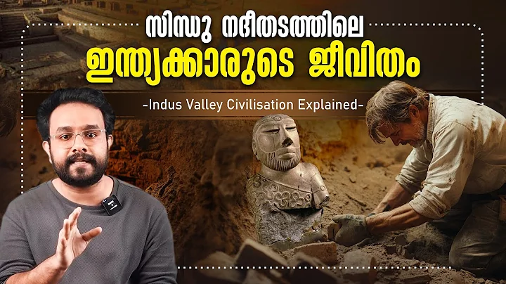

നവ്യാനായരുടെ മോണോ ആക്ട് ഓർത്തെടുത്ത് ദിലീപ്! - @zeekeralamSuper Show | Ep 1 Part 1
Zee Keralam
184K views · 2 days ago


Kedathe - Pravinkoodu Shappu | Sreeraj Sreenivasan | Soubin Shahir | Basil Joseph | Chemban Vinod
Sony Music South
4.4K views · 1 hour ago


Making of JAILER 2 Announcement Teaser | Superstar Rajinikanth | Sun Pictures | Nelson | Anirudh
Sun TV
219K views · 1 day ago

Redmagic 10 Pro | My experience | Best Gaming Phone But?? | Malayalam
CallMeShazzam VINES
178K views · 13 days ago

Benazir Bhutto - വിധിയുടെ പുത്രി | Vallathoru Katha EP 03 | Babu Ramachandran
Babu Ramachandran
204K views · 2 days ago

ആദിമ ഇന്ത്യക്കാരുടെ ജീവിതം | Indus Valley Civilization | History | in Malayalam | Anurag Talks
Anurag Talks
45K views · 4 days ago